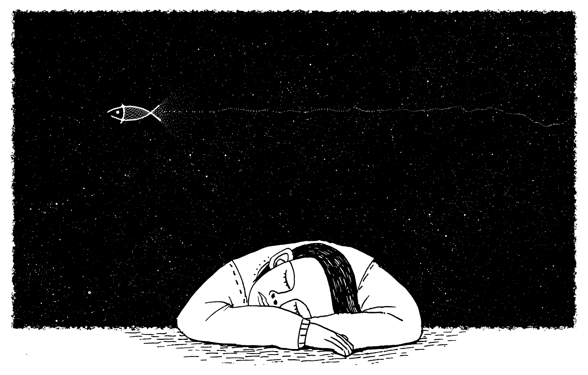

Entregamos soluciones a medida en función del tipo de evento y el aforo, contando los mejores escenarios disponibles en el mercado, seguros y de calidad. Nuestros expertos estarán asesorarte en todo momento. Más información aquí.

Ofrecemos salas totalmente equipadas para que puedas ensayar con tu banda en un espacio adecuado, con protocolos de bioseguridad y aprovechando todos los beneficios que te ofrece nuestra trayectoria. Más información aquí.
Ingresa a los cursos de canto, en donde te daremos desde las bases, hasta los trucos de los grandes músicos del mundo para que seas la nueva estrella en nuestros escenarios y en las fiestas infantiles. Más información aquí.

La mayoría de artistas usa algoritmos en sus canciones y el contenido de algunas composiciones es 100% sintético. Más información aquí.

Moby ponía a disposición de los oyentes su útlimo trabajo en el "Día Mundial del Sueño"; un disco que dura 37 minutos y consta de 6 piezas ambient que dan continuidad a su disco de 2016 "Long Ambients 1" Más información aquí.
Esta edición de los Premios Grammy marca un antes y un después, sobre todo para el rock. Por primera vez en toda su historia todas las nominaciones en la categoría de “Mejor interpretación de rock” son de mujeres. Más información aquí.

El comportamiento humano ante la música es sorprendente, de ahí ese refrán de que la música amansa las fieras, ¿y a las fieras políticas? también, no lo dudes. Más información aquí.

Juan Camilo, el sr del abasto. Un adulto de 60 años de edad de piel morena, ojos marrones y cabello amarillo. Es una persona de carácter fuerte pero siempre colaborador con los demás. Muchos lo conocen porque siempre está dándole consejos a los jóvenes sobre como mejorar su cantoy ayudándolos a superar sus problemas. Es un hombre que siempre está para los demás.

Es un joven de 16 años de edad, que desde pequeño ha andado en silla de ruedas. Padece de una enfermedad que le impide caminar por lo que siempre anda cantando y tocando la bateria desde su silla rodante. Es un joven de piel morena oscura, ojos verdes y cabello ondulado corto. Su actitud y carácter frente a la adversidad lo hacen un líder nato entre sus conocidos. Practica deportes para personas con esta condición y siempre logra alcanzar los primeros lugares.

Abuelo con cabellos largos y barba blanca, es un señor de 80 años de edad que le encanta cantar todos los días en el parque donde vive. Se caracteriza por su carisma y buen trato a las personas. Es un señor jovial que se encarga de cuidar mucho su apariencia y su salud. Es un excelente bailarín por lo que todos en el sector donde vive Juan lo reconocen e invitan siempre a las fiestas del pueblo. Una de sus particularidades es que siempre sale con su reloj de cadena para todos lados.
Joven de 17 años que trabaja medio tiempo en una orquesta. Es un muchacho de color blanco, cabellos rubios y ojos claros con anteojos, bien educado y bien portado con todos. Todos lo conocen por ser muy inteligente y apasionado de la musica. Su pasatiempo favorito es crear piezas de musica.

Danilo es un niño de 7 años, vive en el centro de la ciudad y le gusta jugar con sus amigos de la escuela de musica. Su deporte favorito es el futbol y se dedica a el en todo momento luego de hacer sus tareas. Es un niño muy amable y carismático con un tono de piel morena oscura, cabello lacio y ojos color marrón claro. Todos lo reconocen por andar siempre con una guitarra a todos lados.